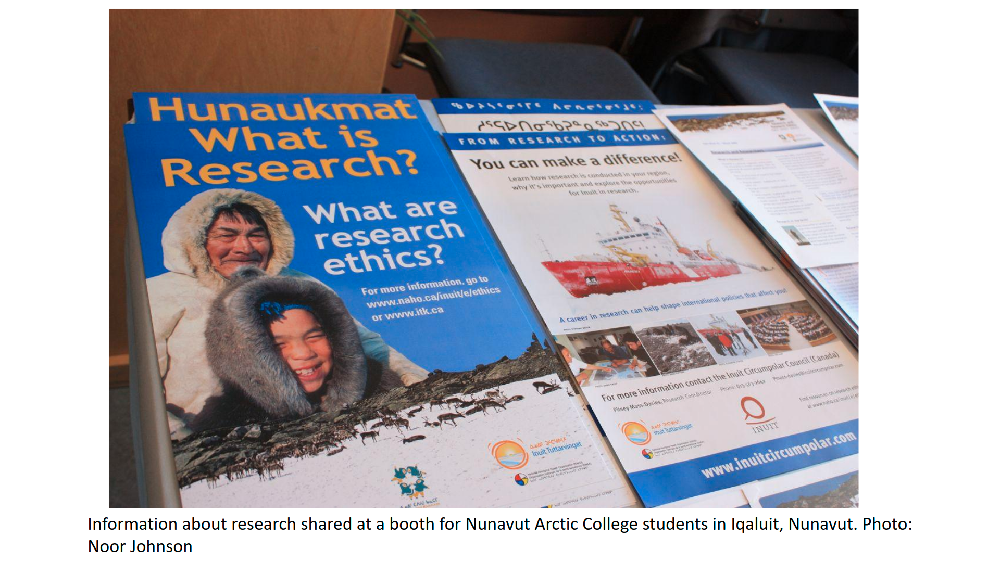
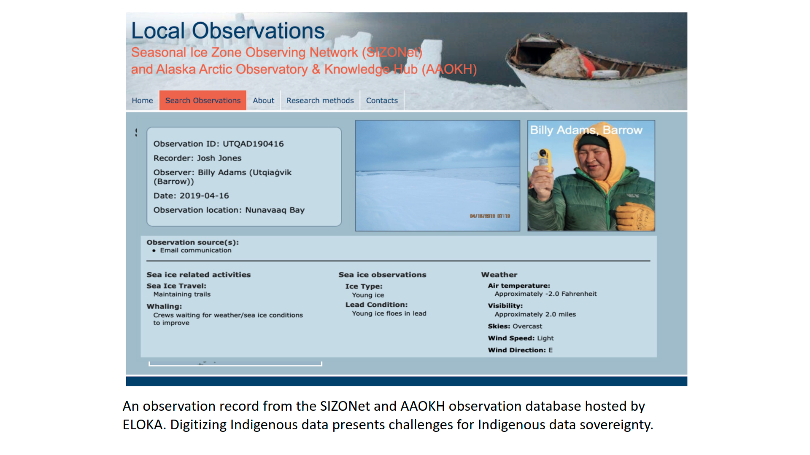
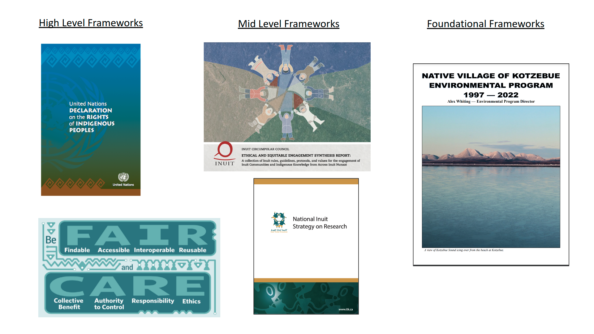

Resources
Trainings:
Fundamentals of OCAP (online training - for working with First Nations in Canada): https://fnigc.ca/ocap-training/take-the-course/
Native Nations Institute trainings on Indigenous Data Sovereignty and Indigenous Data Governance: https://igp.arizona.edu/jit
The Alaska Indigenous Research Program, is a collaboration between the Alaska Native Tribal Health Consortium (ANTHC) and Alaska Pacific University (APU) to increase capacity for conducting culturally responsive and respectful health research that addresses the unique settings and health needs of Alaska Native and American Indian People. The 2022 program runs for three weeks (May 2 - May 20), with specific topics covered each week. Week two (Research Ethics) may be of particular interest. Registration is free.
The r-ETHICS training (Ethics Training for Health in Indigenous Communities Study) is starting to become an acceptable, recognizable CITI addition for IRB training by tribal entities.
Kawerak, Inc and First Alaskans Institute have offered trainings in research ethics and Indigenous Data Sovereignty. Keep an eye out for further opportunities from these Alaska-based organizations.
On open science and ethics:
https://www.nature.com/articles/d41586-022-00724-0?WT.ec_id=NATURE-20220317&utm_source=nature_etoc&utm_medium=email&utm_campaign=20220317&sap-outbound-id=B4EAD742973291804C3AEF5A15DD13806C9F2C30
ON-MERRIT recommendations for maximizing equity in open and responsible research https://zenodo.org/record/6276753#.YjjgC3XMLCI
https://link.springer.com/article/10.1007/s10677-019-10053-3
https://sagebionetworks.org/in-the-news/on-the-ethics-of-open-science-2/
Arctic social science and data management:
Arctic Horizons report:
Anderson, S., Strawhacker, C., Presnall, A., et al. (2018). Arctic Horizons: Final Report. Washington D.C.: Jefferson Institute. https://www.jeffersoninst.org/sites/default/files/Arctic%20Horizons%20Final%20Report%281%29.pdf
Arctic Data Center workshop report:
https://arcticdata.io/social-scientific-data-workshop/
Arctic Indigenous research and knowledge sovereignty frameworks, strategies and reports:
Kawerak, Inc. (2021) Knowledge & Research Sovereignty Workshop May 18-21, 2021 Workshop Report. Prepared by Sandhill.Culture. Craft and Kawerak Inc. Social Science Program. Nome, Alaska.
Inuit Circumpolar Council. 2021. Ethical and Equitable Engagement Synthesis Report: A collection of Inuit rules, guidelines, protocols, and values for the engagement of Inuit Communities and Indigenous Knowledge from Across Inuit Nunaat. Synthesis Report. International.
Inuit Tapiriit Kanatami. 2018. National Inuit Strategy on Research. Accessed at: https://www.inuitcircumpolar.com/project/icc-ethical-and-equitable-engagement-synthesis-report/
Indigenous Data Governance and Sovereignty:
McBride, K. Data Resources and Challenges for First Nations Communities. Document Review and Position Paper. Prepared for the Alberta First Nations Information Governance Centre.
Carroll, S.R., Garba, I., Figueroa-Rodríguez, O.L., Holbrook, J., Lovett, R., Materechera, S., Parsons, M., Raseroka, K., Rodriguez-Lonebear, D., Rowe, R., Sara, R., Walker, J.D., Anderson, J. and Hudson, M., 2020. The CARE Principles for Indigenous Data Governance. Data Science Journal, 19(1), p.43. DOI: http://doi.org/10.5334/dsj-2020-043
Kornei, K. (2021), Academic citations evolve to include Indigenous oral teachings, Eos, 102, https://doi.org/10.1029/2021EO210595. Published on 9 November 2021.
Kukutai, T. & Taylor, J. (Eds.). (2016). Indigenous data sovereignty: Toward an agenda. Canberra: Australian National University Press. See the editors’ Introduction and
Chapter 7.
Kukutai, T. & Walter, M. (2015). Indigenising statistics: Meeting in the recognition space.
Statistical Journal of the IAOS, 31(2), 317–326.
Miaim nayri Wingara Indigenous Data Sovereignty Collective and the Australian
Indigenous Governance Institute. (2018). Indigenous data sovereignty communique.
Indigenous Data Sovereignty Summit, 20 June 2018, Canberra.
http://www.aigi.com.au/wp-content/uploads/2018/07/Communique-Indigenous-Data-Sovereignty-Summit.pdf
National Congress of American Indians. (2018). Resolution KAN-18-011: Support of US
Indigenous data sovereignty and inclusion of tribes in the development of tribal data
governance principles. http://www.ncai.org/attachments/Resolution_gbuJbEHWpkOgcwCICRtgMJHMsUNofqYvuMSnzLFzOdxBlMlRjij_KAN-18-011%20Final.pdf
Rainie, S., Kukutai, T., Walter, M., Figueroa-Rodriguez, O., Walker, J., & Axelsson, P. (2019) Issues in Open Data - Indigenous Data Sovereignty. In T. Davies, S. Walker, M. Rubinstein, & F. Perini (Eds.), The State of Open Data: Histories and Horizons. Cape Town and Ottawa: African Minds and International Development Research Centre. https://zenodo.org/record/2677801#.YjqOFDfMLPY
Schultz, Jennifer Lee, and Stephanie Carroll Rainie. 2014. “The Strategic Power of Data : A Key Aspect of Sovereignty.” 5(4).
Trudgett, Skye, Kalinda Griffiths, Sara Farnbach, and Anthony Shakeshaft. 2022. “A Framework for Operationalising Aboriginal and Torres Strait Islander Data Sovereignty in Australia: Results of a Systematic Literature Review of Published Studies.” eClinicalMedicine 45: 1–23.
IRBs/Tribal IRBs:
Around Him D, Aguilar TA, Frederick A, Larsen H, Seiber M, Angal J. Tribal IRBs: A Framework for Understanding Research Oversight in American Indian and Alaska Native Communities. Am Indian Alsk Native Ment Health Res. 2019;26(2):71-95. doi: 10.5820/aian.2602.2019.71. PMID: 31550379.
Kuhn NS, Parker M, Lefthand-Begay C. Indigenous Research Ethics Requirements: An Examination of Six Tribal Institutional Review Board Applications and Processes in the United States. Journal of Empirical Research on Human Research Ethics. 2020;15(4):279-291. doi:10.1177/1556264620912103
Marley TL. Indigenous Data Sovereignty: University Institutional Review Board Policies and Guidelines and Research with American Indian and Alaska Native Communities. American Behavioral Scientist. 2019;63(6):722-742. doi:10.1177/0002764218799130
Marley TL. Indigenous Data Sovereignty: University Institutional Review Board Policies and Guidelines and Research with American Indian and Alaska Native Communities. American Behavioral Scientist. 2019;63(6):722-742. doi:10.1177/0002764218799130
Ethical research with Sami communities:
Eriksen, H., Rautio, A., Johnson, R. et al. Ethical considerations for community-based participatory research with Sami communities in North Finland. Ambio 50, 1222–1236 (2021). https://doi.org/10.1007/s13280-020-01459-w
Jonsson, Å.N. Ethical guidelines for the documentation of árbediehtu, Sami traditional knowledge. In Working with Traditional Knowledge: Communities, Institutions, Information Systems, Law and Ethics. Writings from the Árbediehtu Pilot Project on Documentation and Protection of Sami Traditional Knowledge. Dieđut 1/2011. Sámi allaskuvla / Sámi University College 2011: 97–125. https://samas.brage.unit.no/samas-xmlui/bitstream/handle/11250/177065/Diedut-1-2011_AasaNordinJonsson.pdf?sequence=8&isAllowed=y
7 Social aspects of collaboration
7.1 Thinking preferences
7.1.1 Learning Objectives
An activity and discussion that will provide:
7.1.2 Thinking Preferences Activity
Step 1: Don’t jump ahead in this document. (Did I just jinx it?)
Step 2: Review the list of statements here and reflect on your traits. Do you learn through structured activities? Are you conscious of time and are punctual? Are you imaginative? Do you like to take risks? Determine the three statements that resonate most with you and record them. Note the symbol next to each of them.
Step 3: Review the symbol key here and assign a color to each of your three remaining statements. Which is your dominant color or are you a mix of three?
Step 4: Using the zoom breakout room feature, move between the five breakout rooms and talk to other participants about their dominant color statements. Keep moving until you cluster into a group of ‘like’ dominant colors. If you are a mix of three colors, find other participants that are also a mix.
Step 5: When the breakout rooms have reached stasis, each group should note the name and dominant color of your breakout room in slack.
Step 6: Take a moment to reflect on one of the statements you selected and share with others in your group. Why do you identify strongly with this trait? Can you provide an example that illustrates this in your life?
7.1.3 About the Whole Brain Thinking System
Everyone thinks differently. The way individuals think guides the way they work, and the way groups of individuals think guides how teams work. Understanding thinking preferences facilitates effective collaboration and team work.
The Whole Brain Model, developed by Ned Herrmann, builds upon our understanding of brain functioning. For example, the left and right hemispheres are associated with different types of information processing and our neocortex and limbic system regulate different functions and behaviours.
The Herrmann Brain Dominance Instrument (HBDI) provides insight into dominant characteristics based on thinking preferences. There are four major thinking styles that reflect the left cerebral, left limbic, right cerebral and right limbic.
These four thinking styles are characterized by different traits. Those in the BLUE quadrant have a strong logical and rational side. They analyze information and may be technical in their approach to problems. They are interested in the ‘what’ of a situation. Those in the GREEN quadrant have a strong organizational and sequential side. They like to plan details and are methodical in their approach. They are interested in the ‘when’ of a situation. The RED quadrant includes those that are feelings-based in their apporach. They have strong interpersonal skills and are good communicators. They are interested in the ‘who’ of a situation. Those in the YELLOW quadrant are ideas people. They are imaginative, conceptual thinkers that explore outside the box. Yellows are interested in the ‘why’ of a situation.
Most of us identify with thinking styles in more than one quadrant and these different thinking preferences reflect a complex self made up of our rational, theoretical self; our ordered, safekeeping self; our emotional, interpersonal self; and our imaginitive, experimental self.
Undertsanding the complexity of how people think and process information helps us understand not only our own approach to problem solving, but also how individuals within a team can contribute. There is great value in diversity of thinking styles within collaborative teams, each type bringing stengths to different aspects of project development.
7.1.4 Bonus Activity: Your Complex Self
Using the statements contrained within this document, plot the quadrilateral representing your complex self.
7.2 Open Data Ethics
Developed by the Exchange for Local Observations and Knowledge of the Arctic (ELOKA) and Navigating the New Arctic Community Office (NNA-CO).
7.2.1 Introduction
This part of the course offers an introduction to ethics in the context of open science. It was developed with input from ELOKA and the NNA-CO, and is a work-in-progress – this is the first time we are offering this training. The training introduces ethics issues in a broad way and includes discussion of social science data and open science, but the majority of the section focuses on issues related to research with, by, and for Indigenous communities. We recognize that there is a need for more in-depth training and focus on open science for social scientists and others who are not engaging with Indigenous Knowledge holders and Indigenous communities, and hope to develop further resources in this area in the future. Many of the data stewardship practices that have been identified as good practices through Indigenous Data Sovereignty framework development are also relevant for those working with Arctic communities that are not Indigenous, although the rights frameworks and collective ownership is specific to the Indigenous context.
The examples we include in this training are primarily drawn from the North American research context. In future trainings, we plan to expand and include examples from other Indigenous Arctic contexts. We welcome suggestions and resources that would strengthen this training for audiences outside of North America.
We also recognize the importance of trainings on Indigenous data sovereignty and ethics that are being developed and facilitated by Indigenous organizations and facilitators. In this training we offer some introductory material but there is much more depth offered in IDS specific trainings. We include some suggestions of organizations offering further training in the “resources” section and encourage participants to seek out these opportunities to deepen their understanding. And there are several sessions this week with some of the authors of the frameworks and protocols that will be discussed, including:
7.2.2 Ethical Data Considerations in Your Research
As the primary repository for the Arctic section of the National Science Foundation, the Arctic Data Center accepts Arctic data from all disciplines. Recently, a new submission feature was released which asks researchers to describe the ethical considerations that are apparent in their research. This question is asked to all researchers, regardless of disciplines.
7.2.2.1 Discussion Questions
7.2.3 FAIR and Open Science
To recap, the Arctic Data Center is an openly-accessible data repository and the data published through the repository is open for anyone to reuse, subject to conditions of the license (at the Arctic Data Center, data is released under one of two licenses: CC-0 Public Domain and CC-By Attribution 4.0). In facilitating use of data resources, the data stewardship community have converged on principles surrounding best practices for open data management One set of these principles is the FAIR principles. FAIR stands for Findable, Accessible, Interoperable, and Reproducible.
The FAIR (Findable, Accessible, Interoperable, Reproducible) principles for data management are widely known and broadly endorsed.
The “Fostering FAIR Data Practices in Europe” project found that it is more monetarily and timely expensive when FAIR principles are not used, and it was estimated that 10.2 billion dollars per years are spent through “storage and license costs to more qualitative costs related to the time spent by researchers on creation, collection and management of data, and the risks of research duplication.” FAIR principles and open science are overlapping concepts, but are distinctive concepts. Open science supports a culture of sharing research outputs and data, and FAIR focuses on how to prepare the data.
7.2.4 Equity issues in open science
 The FAIR principles place emphasis on machine readability, “distinct from peer initiatives that focus on the human scholar” (Wilkinson et al 2016) and as such, do not fully engage with sensitive data considerations and with Indigenous rights and interests (Research Data Alliance International Indigenous Data Sovereignty Interest Group, 2019).
With an Indigenous population double that of Indigenous peoples across the globe, there are over 40 different ethnic and cultural groups in the Arctic (Arctic Council, 2021). Arctic communities (defined as a place and the people who live there, based on geographic location in the Arctic/sub-Arctic) are involved in research in diverse ways - as hosts to visiting or non-local researchers, as well as “home” to community researchers who are leading or collaborating on research projects. Over the past decades, community voices of discontent with standard research practices that are often exclusive and perpetuate inequities have grown stronger. The Arctic research community (defined more broadly as the range of institutions, organizations, researchers and local communities involved in research) is in the midst of a complex conversation about equity in research aimed at transforming research practice to make it more equitable and inclusive.
One of the drivers of community concerns is the colonial practice of extracting knowledge from a place or group of people without respect for local norms of relationship with people and place, and without an ethical commitment to sharing and making benefits of knowledge accessible and accountable to that place. Extractive research can be defined as research that is not mutually beneficial, and the results primarily benefit the researcher. Such approaches to knowledge and data extraction follow hundreds of years of exploration and research that viewed science as a tool of “Enlightenment” yet focused exclusively on benefits to White, European (or “southern” from an Arctic community perspective) researchers and scientists. This prioritization of non-local perspectives and needs (to Arctic communities) continues in Arctic research.
One result of this approach to research has been a lack of access for Arctic residents to the data and knowledge that have resulted from research conducted in their own communities. Much of this data was stored in the personal files or hard drives of researchers, or in archives located in urban centers far from the Arctic.
To address issues like these, the Global Indigenous Data Alliance (GIDA) introduced CARE Principles for Indigenous Data Governance to support Indigenous data sovereignty. CARE Principles for Indigenous Data Governance stand for Collective Benefit, Authority to Control, Responsibility, Ethics. The CARE principles for Indigenous Data Governance complement the more data-centric approach of the FAIR principles, introducing social responsibility to open data management practices. These principles ask researchers to put human well-being at the forefront of open-science and data sharing (Carroll et al., 2021; Research Data Alliance International Indigenous Data Sovereignty Interest Group, September 2019). Indigenous data sovereignty and considerations related to working with Indigenous communities are particularly relevant to the Arctic. The CARE Principles stand for:
To many, the FAIR and CARE principles are viewed by many as complementary: CARE aligns with FAIR by outlining guidelines for publishing data that contributes to open-science and at the same time, accounts for Indigenous’ Peoples rights and interests.
Sharing sensitive data introduces unique ethical considerations, and FAIR and CARE principles speak to this by recommending sharing anonymized metadata to encourage discover ability and reduce duplicate research efforts, following consent of rights holders (Puebla & Lowenberg, 2021). While initially designed to support Indigenous data sovereignty, CARE principles are being adopted more broadly and researchers argue they are relevant across all disciplines (Carroll et al., 2021). As such, these principles introduce a “game changing perspective” for all researchers that encourages transparency in data ethics, and encourages data reuse that is both purposeful and intentional and that aligns with human well-being (Carroll et al., 2021). Hence, to enable the research community to articulate and document the degree of data sensitivity, and ethical research practices, the Arctic Data Center has introduced new submission requirements.
Open science is ostensibly about making access to data and knowledge more equitable and open and enabling reproducible research. These are laudable goals and on the surface, could provide a counterbalance to traditional approaches that limited Arctic community members’ access to research data and knowledge. Because it is being implemented within a social and institutional context that continues to perpetuate inequities in research, however, there are significant challenges remaining to ethically and equitably implementing open science practices.
Here are some examples of impediments to ethical and equitable implementation of open science:
Many Open Science tools and practices (e.g. GitHub, non-proprietary software) have been adopted from software development, and are not familiar to many, even physical, scientists. This makes barriers to implementation of open science and participation in open science practices higher for some than for others.
Some of the main focus areas of open science (making sure data is archived in a clean and reusable format, open access publication) are still not accessible for Arctic residents and others who are not already situated within an academic environment. Open science assumes access to tools and infrastructure, such as computers that have reliable and low-cost or subsidized internet access.
These structural inequalities extend even within the academy. Researchers and academics based in lower-income countries have fewer provided resources and sources of support to pay for open access fees and face greater challenges in adopting open science practices.
7.2.5 Open (and other) data challenges for Indigenous Peoples

The introduction of open data requirements has raised concerns about how open data objectives such as making data freely available for use and reuse may conflict with Indigenous Data Sovereignty and the right of Indigenous peoples to govern their data (Rainie et al. 2019: 301). Stephanie Carroll (formerly Rainie) and colleagues (2019) have summarized some of the data challenges for Indigenous Peoples, including:
Data collection invisibility and bias
Insufficient involvement of Indigenous Peoples in broader decisions/discussions about data governance, including decisions about what data is collected, when, how, and by whom, as well as involvement in global data governance bodies.
Even if Indigenous peoples are not part of data collection, if the data is collected on Indigenous lands and could be used to support decisions that impact these lands, animals, or Indigenous peoples, they should be part of decision-making about that data.
Data access, use, and interpretation, including:
Insufficient availability of data about Indigenous peoples - gaps in national data collection
Challenges in data access (infrastructure and training); accessing and utilizing data from multiple sources given time and staffing limitations (McBride N.D.)
Data collected from a “deficit” lens - reinforces perception of dysfunction, leading to bias and misrepresentation.
Open data movement prioritizes making data available for reuse. However, there are concerns about secondary analysis of Indigenous data given the importance of context to understanding/interpreting Indigenous data and emphasis on building and maintaining relationships in Indigeous research (Burrage 2021).
Important for researchers generating data that they hope will be useful to Indigenous communities to be aware of ethical frameworks for working with/sharing data and partnering with communities.
Data ownership and appropriation
Digitization of data/“big data” - the context surrounding data is often very important to Indigenous Knowledge and data. The digitization of data raises concerns about how and to what extent this context can be preserved.
Individual vs. collective rights. Data ownership is often focused on individual rights (both in protection of sensitive data as well as in intellectual property rights), while Indigenous peoples have both individual and collective rights in relation to data.
All requests for data contributions, clarification, or informational resources are requests for collaboration and should be treated with the same level of importance as larger projects (Murphy 2019).
In Canada, funding agencies have established the Tri-Council Policy Statement on Ethical Conduct for Research Involving Humans; Chapter 9 focuses on research involving First Nations, Inuit and Metis. The chapter points to the importance of addressing issues regarding access to data and use of data with involved communities and suggests using a research agreement to establish any limits on data use and sharing, provisions to offer the opportunity for research participants and collaborators to review reports and publications prior to dissemination/publication, and to include provisions for any anticipated secondary use of information.
The Tri-Council Statement has resulted in direct modifications to institutional-level REB (Canada) processes and procedures, such as incorporation of dedicated sections focusing on Indigenous research ethics within University protocols. For example, the “Indigenous Peoples and Community Engagement” section of an REB application at a Canadian university asks researchers to “Describe arrangements for the participating community’s/ies’ ownership and/or sharing of project data and findings, including the OCAP principles” (see below for more on OCAP).
7.2.6 Indigenous data governance and sovereignty
All governing entities, whether national, state, local, or tribal, need access to good, current, relevant data in order to make policy, planning, and programmatic decisions. Indigenous nations and organizations have had to push for data about their peoples and communities to be collected and shared in ethical and culturally appropriate ways, and they have also had to fight for resources and capacity to develop and lead their own research programs.
7.2.6.1 Indigenous data definitions:
Indigenous data sovereignty “…refers to the right of Indigenous peoples to govern the collection, ownership, and application of data about Indigenous communities, peoples, lands, and resources (Rainie et al. 2019). These governance rights apply “regardless of where/by whom data is held (Rainie et al. 2019).
Some Indigenous individuals and communities have expressed dissatisfaction with the term “data” as being too narrowly focused and abstract to represent the embedded and holistic nature of knowledge in Indigenous communities. Knowledge sovereignty is a related term that has a similar meaning but is framed more broadly, and has been defined as:
“Tribal communities having control over the documentation and production of knowledge (such as through research activities) which relate to Alaska Native people and the resources they steward and depend on” (Kawerak 2021).
Indigenous data is “data in a wide variety of formats inclusive of digital data and data as knowledge and information. It encompasses data, information, and knowledge about Indigenous individuals, collectives, entities, lifeways, cultures, lands, and resources.” (Rainie et al. 2019)
Indigenous data governance is “The entitlement to determine how Indigenous data is governed and stewarded” (Rainie et al. 2019)
7.2.7 IDS Frameworks
There has been increasing emphasis on development of frameworks to support ethical research and data stewardship grounded in Indigenous understandings and world views. The emergence of national and global networks focusing on Indigenous data sovereignty has supported the development of some of these frameworks. For example, the Global Indigenous Data Alliance (GIDA) developed the CARE principles in response to the emergence of the FAIR principles. CARE is a set of high-level principles that are broad enough to encompass more specific frameworks and principles developed by International and national Indigenous networks, organizations, and Tribes. This alliance is supported by three national networks, the United States Indigenous Data Sovereignty Network (USIDSN), Te Mana Raraunga Maori Data Sovereignty Network, and the Maiam nayri Wingara Aboriginal and Torres Strait Islander Data Sovereignty Collective. The latter networks each have worked within their respective national contexts to develop IDS principles at a “mid-level.”
These frameworks are being developed at different governance levels, from “high level” frameworks that are global in scale and therefore more general to mid-level frameworks that are developed at a national scale or by a subset of Indigenous Peoples/Nations (such as circumpolar Inuit or Inuit within the national level in Canada), to foundational level frameworks that are developed at the Tribal or community scale.
It is important for researchers to be aware of the different frameworks that can inform and guide ethical research practice and data management. Frameworks developed at the high or mid-level do not replace foundational frameworks. In the absence of a written framework at the tribal/community scale, the practices of strong consultation and engagement outlined in mid-level frameworks can help inform the development of an ethical approach.

7.3 Discussion questions:
7.4 Data Ethics Resources
7.4.0.1 Resources
Trainings:
Fundamentals of OCAP (online training - for working with First Nations in Canada): https://fnigc.ca/ocap-training/take-the-course/
Native Nations Institute trainings on Indigenous Data Sovereignty and Indigenous Data Governance: https://igp.arizona.edu/jit
The Alaska Indigenous Research Program, is a collaboration between the Alaska Native Tribal Health Consortium (ANTHC) and Alaska Pacific University (APU) to increase capacity for conducting culturally responsive and respectful health research that addresses the unique settings and health needs of Alaska Native and American Indian People. The 2022 program runs for three weeks (May 2 - May 20), with specific topics covered each week. Week two (Research Ethics) may be of particular interest. Registration is free.
The r-ETHICS training (Ethics Training for Health in Indigenous Communities Study) is starting to become an acceptable, recognizable CITI addition for IRB training by tribal entities.
Kawerak, Inc and First Alaskans Institute have offered trainings in research ethics and Indigenous Data Sovereignty. Keep an eye out for further opportunities from these Alaska-based organizations.
On open science and ethics:
https://www.nature.com/articles/d41586-022-00724-0?WT.ec_id=NATURE-20220317&utm_source=nature_etoc&utm_medium=email&utm_campaign=20220317&sap-outbound-id=B4EAD742973291804C3AEF5A15DD13806C9F2C30
ON-MERRIT recommendations for maximizing equity in open and responsible research https://zenodo.org/record/6276753#.YjjgC3XMLCI
https://link.springer.com/article/10.1007/s10677-019-10053-3
https://sagebionetworks.org/in-the-news/on-the-ethics-of-open-science-2/
Arctic social science and data management:
Arctic Horizons report: Anderson, S., Strawhacker, C., Presnall, A., et al. (2018). Arctic Horizons: Final Report. Washington D.C.: Jefferson Institute. https://www.jeffersoninst.org/sites/default/files/Arctic%20Horizons%20Final%20Report%281%29.pdf
Arctic Data Center workshop report: https://arcticdata.io/social-scientific-data-workshop/
Arctic Indigenous research and knowledge sovereignty frameworks, strategies and reports:
Kawerak, Inc. (2021) Knowledge & Research Sovereignty Workshop May 18-21, 2021 Workshop Report. Prepared by Sandhill.Culture. Craft and Kawerak Inc. Social Science Program. Nome, Alaska.
Inuit Circumpolar Council. 2021. Ethical and Equitable Engagement Synthesis Report: A collection of Inuit rules, guidelines, protocols, and values for the engagement of Inuit Communities and Indigenous Knowledge from Across Inuit Nunaat. Synthesis Report. International.
Inuit Tapiriit Kanatami. 2018. National Inuit Strategy on Research. Accessed at: https://www.inuitcircumpolar.com/project/icc-ethical-and-equitable-engagement-synthesis-report/
Indigenous Data Governance and Sovereignty:
McBride, K. Data Resources and Challenges for First Nations Communities. Document Review and Position Paper. Prepared for the Alberta First Nations Information Governance Centre.
Carroll, S.R., Garba, I., Figueroa-Rodríguez, O.L., Holbrook, J., Lovett, R., Materechera, S., Parsons, M., Raseroka, K., Rodriguez-Lonebear, D., Rowe, R., Sara, R., Walker, J.D., Anderson, J. and Hudson, M., 2020. The CARE Principles for Indigenous Data Governance. Data Science Journal, 19(1), p.43. DOI: http://doi.org/10.5334/dsj-2020-043
Kornei, K. (2021), Academic citations evolve to include Indigenous oral teachings, Eos, 102, https://doi.org/10.1029/2021EO210595. Published on 9 November 2021.
Kukutai, T. & Taylor, J. (Eds.). (2016). Indigenous data sovereignty: Toward an agenda. Canberra: Australian National University Press. See the editors’ Introduction and Chapter 7.
Kukutai, T. & Walter, M. (2015). Indigenising statistics: Meeting in the recognition space. Statistical Journal of the IAOS, 31(2), 317–326.
Miaim nayri Wingara Indigenous Data Sovereignty Collective and the Australian Indigenous Governance Institute. (2018). Indigenous data sovereignty communique. Indigenous Data Sovereignty Summit, 20 June 2018, Canberra. http://www.aigi.com.au/wp-content/uploads/2018/07/Communique-Indigenous-Data-Sovereignty-Summit.pdf
National Congress of American Indians. (2018). Resolution KAN-18-011: Support of US Indigenous data sovereignty and inclusion of tribes in the development of tribal data governance principles. http://www.ncai.org/attachments/Resolution_gbuJbEHWpkOgcwCICRtgMJHMsUNofqYvuMSnzLFzOdxBlMlRjij_KAN-18-011%20Final.pdf
Rainie, S., Kukutai, T., Walter, M., Figueroa-Rodriguez, O., Walker, J., & Axelsson, P. (2019) Issues in Open Data - Indigenous Data Sovereignty. In T. Davies, S. Walker, M. Rubinstein, & F. Perini (Eds.), The State of Open Data: Histories and Horizons. Cape Town and Ottawa: African Minds and International Development Research Centre. https://zenodo.org/record/2677801#.YjqOFDfMLPY
Schultz, Jennifer Lee, and Stephanie Carroll Rainie. 2014. “The Strategic Power of Data : A Key Aspect of Sovereignty.” 5(4).
Trudgett, Skye, Kalinda Griffiths, Sara Farnbach, and Anthony Shakeshaft. 2022. “A Framework for Operationalising Aboriginal and Torres Strait Islander Data Sovereignty in Australia: Results of a Systematic Literature Review of Published Studies.” eClinicalMedicine 45: 1–23.
IRBs/Tribal IRBs:
Around Him D, Aguilar TA, Frederick A, Larsen H, Seiber M, Angal J. Tribal IRBs: A Framework for Understanding Research Oversight in American Indian and Alaska Native Communities. Am Indian Alsk Native Ment Health Res. 2019;26(2):71-95. doi: 10.5820/aian.2602.2019.71. PMID: 31550379.
Kuhn NS, Parker M, Lefthand-Begay C. Indigenous Research Ethics Requirements: An Examination of Six Tribal Institutional Review Board Applications and Processes in the United States. Journal of Empirical Research on Human Research Ethics. 2020;15(4):279-291. doi:10.1177/1556264620912103
Marley TL. Indigenous Data Sovereignty: University Institutional Review Board Policies and Guidelines and Research with American Indian and Alaska Native Communities. American Behavioral Scientist. 2019;63(6):722-742. doi:10.1177/0002764218799130
Marley TL. Indigenous Data Sovereignty: University Institutional Review Board Policies and Guidelines and Research with American Indian and Alaska Native Communities. American Behavioral Scientist. 2019;63(6):722-742. doi:10.1177/0002764218799130
Ethical research with Sami communities:
Eriksen, H., Rautio, A., Johnson, R. et al. Ethical considerations for community-based participatory research with Sami communities in North Finland. Ambio 50, 1222–1236 (2021). https://doi.org/10.1007/s13280-020-01459-w
Jonsson, Å.N. Ethical guidelines for the documentation of árbediehtu, Sami traditional knowledge. In Working with Traditional Knowledge: Communities, Institutions, Information Systems, Law and Ethics. Writings from the Árbediehtu Pilot Project on Documentation and Protection of Sami Traditional Knowledge. Dieđut 1/2011. Sámi allaskuvla / Sámi University College 2011: 97–125. https://samas.brage.unit.no/samas-xmlui/bitstream/handle/11250/177065/Diedut-1-2011_AasaNordinJonsson.pdf?sequence=8&isAllowed=y